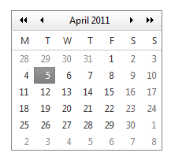

Методи для роботи з датою/часом
Об’єкт Date має багато методів для обробки даних, які він містить.
Для початку давайте розберемося з деякими особливостями в компонентах дати.
Нумерація місяців починається з нуля:
0 - січень;
1 - лютий;
2 - березень;
...
10 - листопад;
11 - грудень.
Нумерація днів тижня починається з нуля і неділі:
0 - неділя;
1 - понеділок;
2 - вівторок;
3 - середа;
4 - четвер;
5 - п'ятниця;
6 - шабат.
Дні місяця починаються з 1 і до 31.
Години: 0..23.
Хвилини та секунди: 0..59 (високосна секунда, не підтримується у JS).
Мілісекунди: 0..999.
Основні методи (весь список методів на http://javascript.ru/Date):
// розпарсити строку в дату:
date = Date.parse("10-24-2015, 06:34");
// перетворити дату в строку (числовий формат перетвориться в строку-число):
date.toString();
// перетворити об'єкт дати в число:
date.valueOf();
alert(new Date(2017, 0, 1).valueOf());
Робота з компонентами дати:
// повертають компоненти дати:
date.getFullYear();
date.getMonth();
date.getDate();
date.getDay(); // повертає день тижня
date.getHours();
date.getMinutes();
date.getSeconds();
date.getMilliseconds();
// встановлють нове значення компонента дати:
date.setFullYear(x);
date.setMonth(x);
date.setDate(x);
date.setHours(x);
date.setMinutes(x);
date.setSeconds(x);
date.setMilliseconds(x);
Метода setDay() немає, тому що день тижня - це обчислювана величина.
date.getYear() - метод, що не рекомендується використовувати. Він працював до 2000 року і повертав останні дві цифри року: 96, 98, 99. Зараз він повертає 116, 117...
Робота з методами, що працюють з таймзонами, UTC-часом, представленням часу в локальному форматі вам знадобляться при роботі з крупними мультимовними сайтами, що працюють одночасно в багатьох часових поясах. Нічого складного в цих методах немає, розібратися в них зможете самі, головне - правильно побудувати логіку алгоритму.
Об'єкт часу є автокориговочним. Це означає, що ви не зможете встановити дату 29 лютого у невисокосний рік, дата автоматично встановиться на 1 березня.
Якщо в один з компонентів встановити значення більше, ніж допустиме - автоматично виникне зсув на наступні дати, години і т.д. Підтримуються також значення, менші 0, зсув відбувається у зворотній бік.
Завдання
- Виведіть повідомлення з номером поточного дня тижня.
- Виведіть повідомлення з назвою поточного дня тижня.
- Виведіть повідомлення з датою, що була 100 днів тому.
- Створіть функцію, що повертає задану їй дату в форматі "дд/мм/рр" (24/05/17). Виведіть повідомлення з завтрашньою датою в цьому форматі.
Домашнє завдання
-
На наступне заняття підготуйте новий проект: файли html, css, js.
В html-файлі створіть декілька полів ввода з класом "js-date", пару span-кнопок:
<p>Оформіть створені елементи стилями на свій смак.
<time id="date1">дд.мм.рррр</time>
<span class="js-date" data-for="date1">Вибрати дату</span>
</p>
Створіть div#datepicker з табличкою довільного місяця і заголовком, щось на зразок цього (але український варіант):

На наступному занятті ми будемо створювати свій календарик, з блек-джеком і вихідними.
Далі завдання виконуйте у пісочниці чи проекті по домашньому завданню цієї лекції.
Корисні посилання: